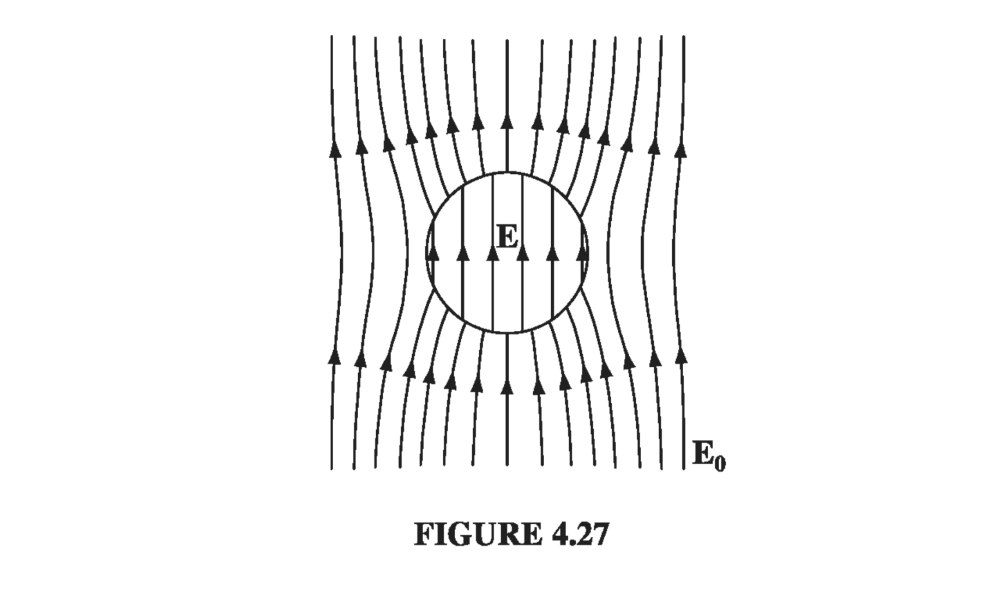
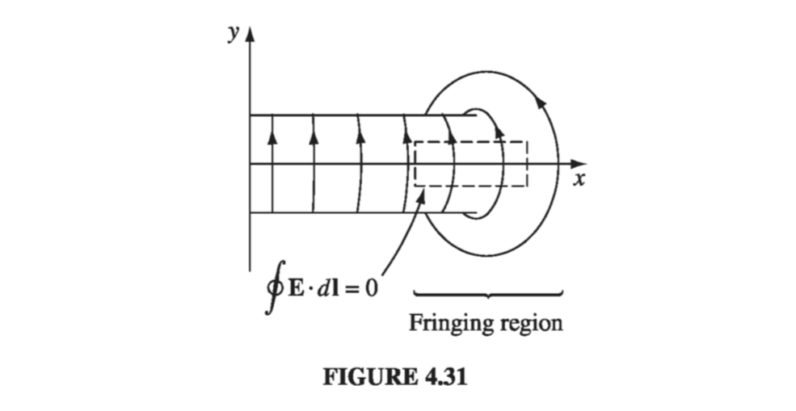

4.4: Linear Dielectrics
4.4.1: Susceptibility, Permittivity, Dielectric Constant
In the first few sections of this chapter we did not commit ourselves as to the cause of P; we dealt only with the effects of polarization. From the qualitative essence of 4.1, though, we know that the polarization of a dielectric ordinarily results from an electric field, which lines up the atomic or molecular dipoles. For many substances, in fact, the polarization is proportional to the field, provided E is not too strong: The constant of proportionality, , is called the electric susceptibility of the medium (a factor of has been extracted to make dimensionless). The value of depends on the microscopic structure of the substance in question (and also on external conditions such as temperature). I shall call materials that obey linear dielectrics.
In modern optical applications, especially, nonlinear materials have become increasingly important. For these there is a second term relating P to E - typically a cubic term. In general, Eq 4.30 can be regarded as the first (nonzero) term in the Taylor expansion of P in powers of E.
Note that E in is the total field; it may be due in part to free charges and in part to the polarization itself. If, for instance, we put a piece of dielectric into an external field , we cannot compute P directly from the linear susceptibility relation; the external field will polarize the material, and this polarization will produce its own field, which then contributes to the total field, and this in turn modifies the polarization, which... Breaking out of this infinite regress is not always easy. You'll see some examples in a moment. The simplest approach is to begin with the displacement, at least in those cases where D can be deduced directly from the free charge distribution. In linear media we have so D is also proportional to E where This new constant is called the permittivity of the material. (In vacuum, where there is no matter to polarize, the susceptibility is zero, and the permittivity is . That's why is called the permittivity of free space. I dislike the term, for it suggest that the vacuum is just a special kind of linear dielectric, in which the permittivity happens to have the value .) If you remove a factor of , the remaining dimensionless quantity is called the relative permittivity, or dielectric constant, of the material. Dielectric constants for some common substances are listed in Table 4.2. (Notice that is greater than 1, for all ordinary materials.) Of course, the permittivity and the dielectric constant do not convey any information that was not already available in the susceptibility, nor is there anything essentially new in Eq 4.32: the physics of linear dielectrics is all contained in

Example 4.5
A metal sphere of radius a carries a charge Q (Fig 4.20). It is surrounded, out to radius b, by linear dielectric material of permittivity . Find the potential at the center (relative to infinity).

Since linear dielectrics give us cases where P and D are proportional to E, you might suppose that linear dielectrics escape the defect in the parallel between E and D. Does it not follow that their curls, like E's, must vanish? Unfortunately, it does not, for the line integral of P around a closed path that straddles the boundary between one type of material and another need not be zero, even though the integral of E around the same loop must be. The reason is that the proportionality factor is different on the two sides. For instance, at the interface between a polarized dielectric and the vacuum (Fig 4.21), P is zero on one side but not on the other. Around this loop, , and hence, by Stokes' theorem, the curl of P cannot vanish everywhere within the loop (in fact, it is infinite at the boundary).
Of course, if space is entirely filled with a homogeneous linear dielectric, then this objection is void; in this rather special circumstance so D can be found from the free charge just as though the dielectric were not there: where is the field the same charge distribution would produce in the absence of any dielectric. According to and , therefore, Conclusion: when all space is filled with a homogeneous linear dielectric, the field everywhere is simply reduced by a factor of one over the dielectric constant. (Actually it's not necessary for the dielectric to fill all space; in regions where the field is zero anyway, it can hardly matter whether the dielectric is present or not, since there's no polarization in any event.)
For example, if a free charge q is embedded in a large dielectric, the field it produces is (that's , not ), and the force it exerts on nearby charges is reduced accordingly. But it's not that there is anything wrong with Coulomb's law; rather, the polarization of the medium partially "shields" the charge, by surrounding it with bound charge of the opposite sign (Fig 4.22)

Example 4.6
A parallel-plate capacitor (Fig 4.23) is filled with insulating material of dielectric constant . What effect does this have on its capacitance?

A crystal is generally easier to polarize in some directions than others, and in this case Eq 4.30 is replaced by the general linear relation just as Eq. 4.1 was superseded by Eq. 4.3 for asymmetrical molecules. The nine coefficients constitute the susceptibility tensor
4.4.2: Boundary Value Problems with Linear Dielectrics
In a (homogeneous isotropic) linear dielectric, the bound charge density is proportional to the free charge density In particular, unless free charge is actually embedded in the material, and any net charge must reside at the surface. Within such a dielectric, then, the potential obeys Laplace's equation, and all the machinery of Chapter 3 carries over. It is convenient, however, to rewrite the boundary conditions in a way that makes reference only to the free charge. Equation 4.26 says or, in terms of the potential, whereas the potential itself is, of course, continuous (Eq 2.34):
Example 4.7
A sphere of homogeneous linear dielectric material is placed in an otherwise uniform electric field (Fig 4.27). Find the electric field inside the sphere

Solution This is very similar to Ex 3.8, in which an uncharged conducting sphere was introduced into a uniform field. In that case, the field of the induced charge canceled within the sphere. In a dielectric, the cancellation from the bound charge is incomplete.Our problem is to solve Laplace's equation, for when and when , subject to the boundary conditions (The second of these follows from Eq 4.41, since there is no free charge at the surface.) Inside the sphere, Eq 3.65 says outside the sphere, in view of (iii), we have Boundary condition (i) requires that so Meanwhile, condition (ii) yields so It follows that Evidently We should be used to finding that the field within a polarized sphere is uniform, but it's still a surprising result:
Example 4.8
Suppose the entire region below the plane in Fig 4.28 is filled with uniform linear dielectric material of susceptibility . Calculate the force on a point charge q situated a distance d above the origin.

4.4.3: Energy in Dielectric Systems
It takes work to charge up a capacitor (Eq 2.55): If the capacitor is filled with linear dielectric, its capacitance exceeds the vacuum value by a factor of the dielectric constant as we found in Ex. 4.6. Evidently, the work necessary to charge a dielectric-filled capacitor is increased by the same factor. The reason is pretty clear: you have to pump more (free) charge, to achieve a given potential, because part of the field is canceled off by the bound charges.
In chapter 2 we got a general formula for the energy stored in any electrodynamic system The case of the dielectric-filled capacitor suggests that this should be changed to
in the presence of linear dielectrics. To prove it, suppose the dielectric material is fixed in position, and we bring in the free charge, a bit at a time. As is increased by an amount , the polarization will change and with it the bound charge distribution; but we're interested only in the work done on the incremental free charge: Since , where is the resulting change in D, so Now and hence, integrating by parts, The divergence theorem turns the first term into a surface integral, which vanishes if we integrate over all space. Therefore, the work done is equal to So far, this applies to any material. In the specific case of a linear dielectric, (for infinitesimal increments). Thus The total work done, then, as we build the free charge up from zero to the final configuration is as anticipated.
It may puzzle you that Eq. 4.55, which we derived quite generally in Chapter 2, does not seem to apply in the presence of dielectrics, where it is replaced by Eq. 4.58. The point is not that one or the other of these equations is wrong, but rather that they address somewhat different questions. The distinction is subtle, so let's go right back to the beginning: What do we mean by "the energy of a system"? Answer: It is the work required to assemble the system. Very well - but when dielectrics are involved, there are two quite different ways one might construe this process:
- We bring in all the charges (free and bound), one by one, with tweezers, and glue each one down in its proper final location. If this is what you mean by "assemble the system," then Eq. 4.55 is your formula for the energy stored. Notice, however, that this will not include the work involved in stretching and twisting the dielectric molecules (if we picture the positive and negative charges as held together by tiny springs, it does not include the spring energy, , associated with polarizing each molecule).
- With the unpolarized dielectric in place, we bring in the free charges, one by one, allowing the dielectric to respond as it sees fit. If this is what you mean by "assemble the system" (and ordinarily it is, since free charge is what we actually push around), then Eq. 4.58 is the formula you want. In this case the "spring" energy is included, albeit indirectly, because the force you must apply to the free charge depends on the disposition of the bound charge; as you move the free charge, you are automatically stretching those "springs."
Example 4.9
A sphere of radius R is filled with material of dielectric constant and uniform embedded free charge . What is the energy of this configuration?
Solution From Gauss's law, the displacement is So the electric field is The purely electrostatic energy is But the total energy (Eq 4.58) is Notice that - that's because does not include the energy involved in stretching the molecules.
Let's check that is the work done on the free charge in assembling the system. We start with the (uncharged, unpolarized) dielectric sphere, and bring in the free charge in infinitesimal installments (dq), filling out the sphere layer by layer. When we have reached radius , the electric field is The work required to bring the next dq in from infinity to is This increases the radius so the total work done, in going from to is Evidently the energy "stored in the springs" is
I would like to confirm this in an explicit model. Picture the dielectric as a collection of tiny proto-dipoles, each consisting of +q and -q attached to a spring of constant k and equilibrium length 0, so in the absence of any field the positive and negative ends coincide. One end of each dipole is nailed in position (like the nuclei in a solid), but the other end is free to move in response to any imposed field. Let be the volume assigned to each proto-dipole (the dipole itself may occupy only a small portion of this space).
With the field turned on, the electric force on the free end is balanced by the spring force; the charges separate by a distance . In our case The resulting dipole moment is and the polarization is so The energy of this particular spring is and hence the total is Now so and it works out perfectly.
It is sometimes alleged that Eq. 4.58 represents the energy even for nonlinear dielectrics, but this is false: To proceed beyond Eq. 4.57, one must assume linearity. In fact, for dissipative systems the whole notion of "stored energy" loses its meaning, because the work done depends not only on the final configuration but on how it got there. If the molecular "springs" are allowed to have some friction, for instance, then can be made as large as you like, by assembling the charges in such a way that the spring is obliged to expand and contract many times before reaching its final state. In particular, you get nonsensical results if you try to apply Eq. 4.58 to electrets, with frozen-in polarization (see Prob. 4.27).
4.4.4: Forces on Dielectrics
Just as a conductor is attracted into an electric field (Eq. 2.51), so too is a dielectric - and for essentially the same reason: the bound charge tends to accumulate near the free charge of the opposite sign. But the calculation of forces on dielectrics can be surprisingly tricky. Consider, for example, the case of a slab of linear dielectric material, partially inserted between the plates of a parallel-plate capacitor (Fig. 4.30). We have always pretended that the field is uniform inside a parallel-plate capacitor, and zero outside. If this were literally true, there would be no net force on the dielectric at all, since the field everywhere would be perpendicular to the plates. However, there is in reality a fringing field around the edges, which for most purposes can be ignored but in this case is responsible for the whole effect. (Indeed, the field could not terminate abruptly at the edge of the capacitor, for if it did, the line integral of E around the closed loop shown in Fig. 4.31 would not be zero.) It is this nonuniform fringing field that pulls the dielectric into the capacitor.


Fringing fields are notoriously difficult to calculate; luckily, we can avoid this altogether, by the following ingenious method. Let W be the energy of the system - it depends, of course, on the amount of overlap. If I pull the dielectric out an infinitesimal distance dx, the energy is changed by an amount equal to the work done:
where is the force I mus exert, to counteract the electrical force F on the dielectric. Thus, the electrical force on the slab is Now, the energy stored in the capacitor is and the capacitance in this case is where l is the length of the plates (Fig 4.30). Let's assume that the total charge on the plates is held constant , as the dielectric moves. In terms of Q, so But and hence
(The minus sign indicates that the force is in the negative x direction; the dielectric is pulled into the capacitor.)
It is a common error to use Eq. 4.61 (with V constant), rather than Eq. 4.63 (with Q constant), in computing the force. One then obtains
which is off by a sign. It is, of course, possible to maintain the capacitor at a fixed potential, by connecting it up to a battery. But in that case the battery also does work as the dielectric moves; instead of Eq. 4.59, we now have where is the work done by the battery. It follows that the same as before, with the correct sign.
Please understand: The force on the dielectric cannot possibly depend on whether you plan to hold Q constant or V constant - it is determined entirely by the distribution of charge, free and bound. It's simpler to calculate the force assuming constant Q, because then you don't have to worry about work done by the battery; but if you insist, it can be done correctly either way.
Notice that we were able to determine the force without knowing anything about the fringing fields that are ultimately responsible for it! Of course, it's built into the whole structure of electrostatics that , and hence that the fringing fields must be present; we're not really getting something for nothing here - just cleverly exploiting the internal consistency of the theory. The energy stored in the fringing fields themselves (which was not accounted for in this derivation) stays constant, as the slab moves; what does change is the energy well inside the capacitor, where the field is nice and uniform.